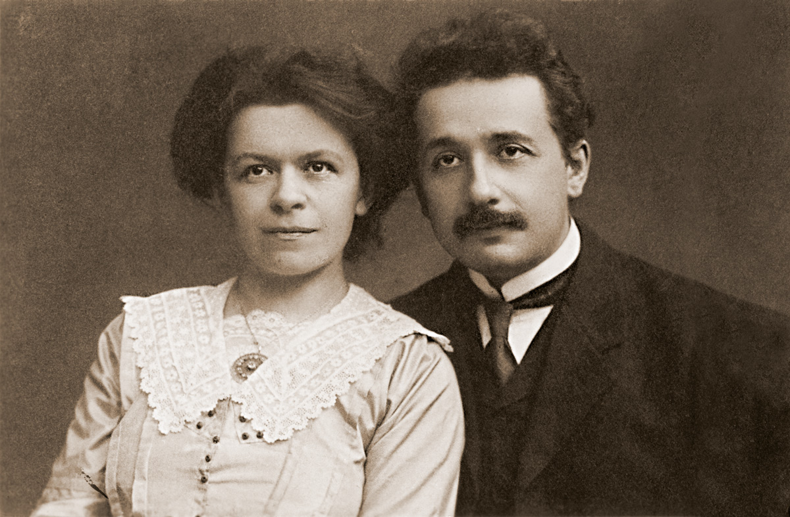

Mileva Marić
¿Quien es?
D
estacada matemática y primera esposa de Albert Einstein, Mileva Marić estudió en la Escuela Politécnica de Zúrich, siendo la única mujer de la clase y llegando a obtener mejores calificaciones que las del premio Nobel. En los últimos años, se ha abierto un debate histórico-científico sobre la probable coautoría de Marić en algunas de las investigaciones más importantes de Einstein.

Un poco de la vida de Mileva Maric
Mileva Marić fue una destacada matemática y física serbia nacida en 1875 en Titel, hoy parte de Serbia, y fallecida en 1948 en Zürich, Suiza. Es conocida principalmente por su relación con Albert Einstein, con quien se casó en 1903 y tuvo dos hijos. Aunque es menos conocida en la historia de la ciencia por sí misma, Mileva Marić tuvo una influencia significativa en la vida y el trabajo de Einstein, especialmente en sus primeros años.